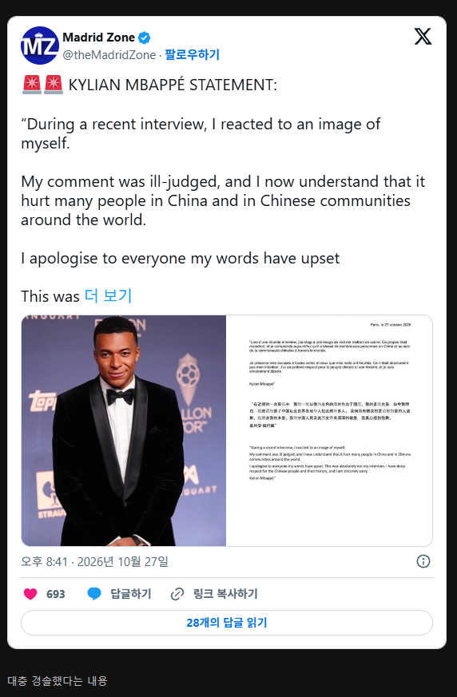

속보) 음바페 긴급 사과 ㄷㄷ
댓글
중국인들한테 뭔가 잘못했나
릅택동처럼 지 얼굴을 마오쩌둥에 합성한 밈이 웃기다고 했다가 짱들 화남
???: 앞으론 웃기다고 하지 말고
ㅈ같다고 해야겠군!!!
죄송합니다 케인콘
맞는 말을 해도 사과하는 아이러니한 세상
근데 마오쩌둥이 독재자 아니면 뭐임? 역사에 과오가 있을 수 있는데 인정을 왜 안하는거지 ㅋㅋ
그럼 홍위병들은 독재자들의 열성적인 하수인이었다는 소리니
위로 올라가면 조상중에 홍위병 나올놈들 꽤 될듯?
그럼 ㅅㅂ 중국이 대약진운동 없이 중국 성장했으면 벌써 미국 따라잡았지
대약진운동 덕분에 중국의 령웅임
그 시대에 필요한 독재자인데 비판하면 안된다는거지 독재자 옹호하는 애들은 다들 그 논리임.
우리나라에서도 독재자를 독재자라 부르면 발작하는 애들이 수두룩한데 뭘
당장 민주국가인 우리나라도
공과 과가 있다면서
추양받는 사람이 있는데, 저기는 더하겠지.
독재가 시기에 따라 더 효과적인 방식일수는 있는데, 그럼 할일 다하고 민주주의가 더 효과적인 단계에 들어갔을때 이제 그만할께요 하고 알아서 퇴임해주는 일이 얼마나 있는지 생각해보면 공이 있어도 존나 평가절하될수밖에 없음.
지금 존나 아프니까 마약성 진통제를 박아야한다 - 맞을수 있음
나중에 안아파지면 내가 끊을수 있다 - 개소리
중국인도 알사람은 아는데, 그걸 인정하면 뒤진다니까?
돈 참 좋아하긴 하는구나 바로 대가리 박네 ㅋㅋ
자기 밥그릇만 걸린게 아니고 관련 산업 자체가 목줄 잡히면 ㅈ같아도 숙여야지 뭐...
벹남은 안숙이던데
그래서 본인 포함 다 죽었잖아. 멍청+이기적인거지
요즘 음바페 독재자밈이 좀 핫하긴 했었음
저 밈 어디까지 가나 싶었는데 결국 중국까지 가버렸구먼
안녕하세요 저는 라리가에서 축구를 하고 있는...
")
짱 깨한테 유머란 너무 고지능활동이긴해
중꿔 머니 시장 달달하지.
짱 1깨 머니가 강하긴 하네
검둥이를 굴복시키네
사과를 안했어야 간지지
Chinese communities가 아니라 communists를 잘 못 말한거 같은데
라리가 송출중단얘기까지 나온다더만 다급하긴하겠지ㅋㅋㅋㅋ